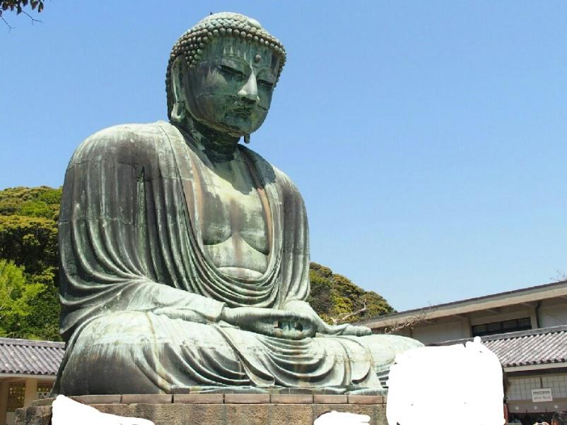
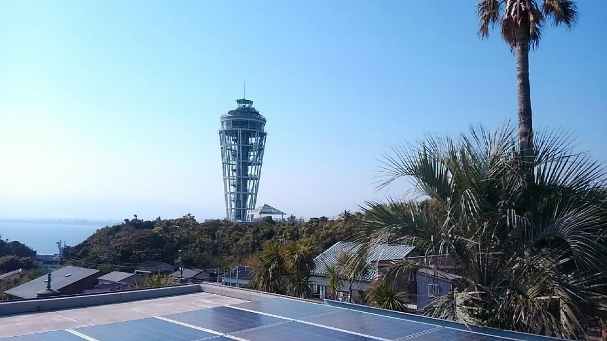

|
春の江ノ島・鎌倉新歓旅行
2015/05/12 掲載
４月２６日に新歓旅行を行いました。参加者は１１名でした。 まずは大船駅で鎌倉江の島パスを購入して、横須賀線で鎌倉駅へ向かいました。 鎌倉駅からは徒歩で鶴岡八幡宮に向かいました。 鶴岡八幡宮ではフル単祈願をしました(笑) その後鎌倉駅から江ノ電に乗車しました。 快晴の日曜日ということで、江ノ電は大混雑でした。 長谷駅で江ノ電を降りて、大仏観光に向かいました。 まずは裏から見ようということで、敷地外から大仏様の後ろ姿を拝みました(笑)  そして、入場料を払って大仏様の御顔を拝みました。  大仏様を拝んだ後は、長谷駅に戻り再び江ノ電に乗車。 鎌倉高校前駅まで乗車しました。そして鎌倉高校前駅から腰越駅まで写真を撮りつつ歩きました。 腰越駅からは、江ノ電の見どころの一つである併用軌道を歩きました。 そして名物の江ノ電最中でおやつにしました。(昼食は食べていませんｗ) それから、江の島に渡りました。 天気が良く、とても眺めがよかったです。  旅の締めは湘南モノレールでした。 初めて乗車したメンバーが多く、アクティブなモノレールに驚いていました（笑） そして大船駅で解散しました。 その後、希望者で交流会を行いました。OBの方にも参加していただき、楽しい交流会となりました。 参加者 １年 ４人 ２年 ４人 ３年 ３人 途中参加 OB ４人 （文責：新歓担当 T-01） 
|